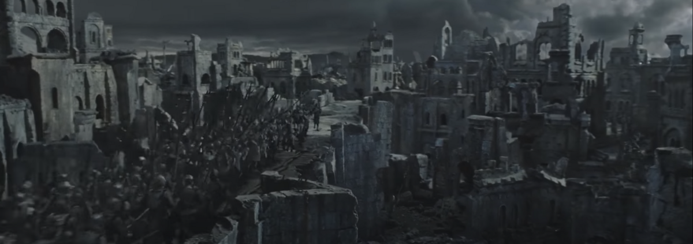
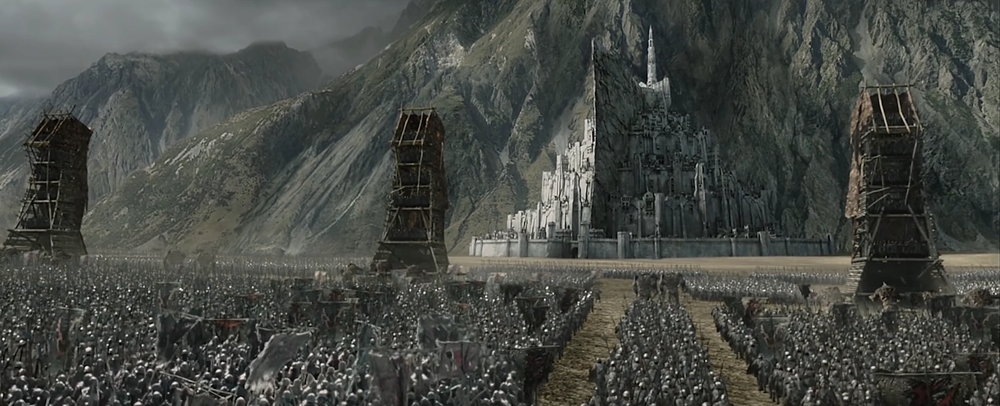
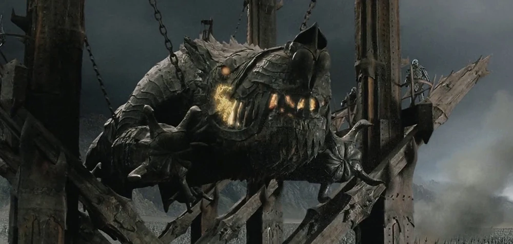
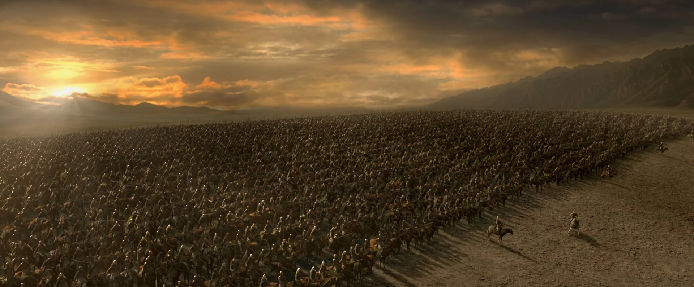
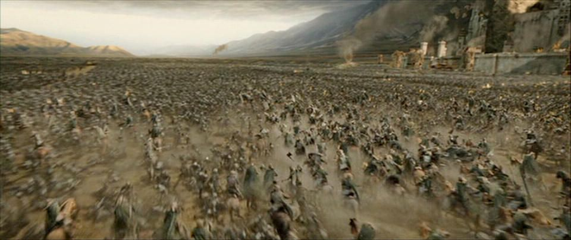
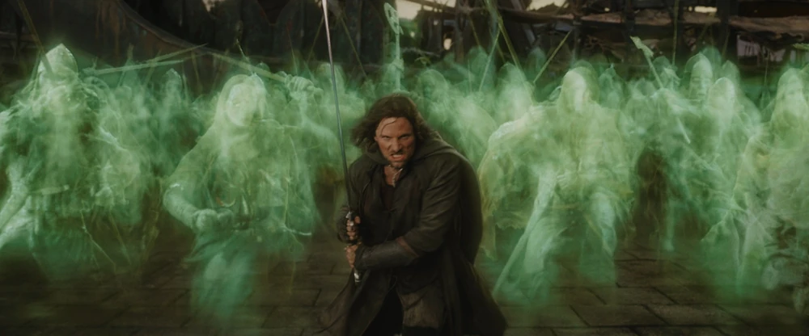
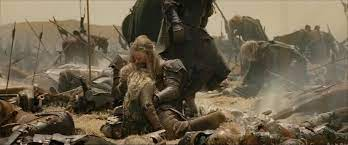

Prelude:
There was no dawn between March 9 and 10. This was the day which is called the Dawnless Day. A large cloud from Mordor silently crept over the lands of Rohan and Gondor, covering the sun and preventing sunlight from penetrating the clouds. Sauron's purpose was to instil fear amongst the Army of the West, and also to ease the passing of his minions who feared daylight. On that same day, an army from the Black Gate emerged and captured the island of Cair Andros. The purpose was two-fold: to prevent the Rohirrim from reaching Minas Tirith, and to attempt to cut off the garrison at Osgiliath.
The Muster of Rohan, led by King Théoden, left the camp at Dunharrow, the Beacons of Gondor being lit one day prior. The Witch-king of Angmar emerged from Minas Morgul on a black horse, accompanied by an army stated to be larger than any that departed from the vale since the time of Isildur. This was the smaller of Sauron's forces; the larger host issuing forth from the Black Gate.
On March 11, Denethor sent forces to reinforce the garrison at Osgiliath, expecting a large blow from the enemy. After giving a report to Denethor, Faramir left to command the garrison. That night, they were attacked by the Witch-king's forces, who had been joined by Haradrim regiments. In the morning of the next day, despite stout resistance, the Witch-king's forces crossed the Anduin and Faramir retreated to the Causeway Forts of the Rammas Echor, the wall surrounding the Pelennor Fields, holding the position for most of March 12.
Gandalf arrived to give heart to the defenders, remaining there for most of the day, before escorting wounded back to Minas Tirith. Although Faramir and his men resisted stoutly and inflicted heavy casualties on the enemy forces, the Witch King's army began to breach the wall, forcing Faramir to retreat with most of his remaining men, but was soon overtaken by Orcs and Southrons pouring onto the fields. Prince Imrahil and Gandalf led a cavalry sortie which allowed the retreating men to regroup and return to Minas Tirith, but Faramir was wounded by a Southron arrow and was carried by Imrahil.
The Siegue:
Upon arriving at the city, the enemy sprawled before the main walls of Minas Tirith. They quickly put up siege equipment and dug trenches. A large force of Orcs and Easterlings was sent to guard the northern roads against possible reinforcements from Rohan. It put trenches and stakes on the road, enough to halt any charge.
On March 13, the Witch-king began to soften the defences of the city. However the outer wall of Minas Tirith, the Othram, built when the Númenóreans in-exile were still strong, was as impregnable as the tower of Orthanc. The siege engines of Mordor, while not penetrating it, were able to launch incendiary missiles into the lower city, setting it ablaze. The heads of casualties and prisoners taken in Osgiliath and at the Causeway Forts were also hurled into the city to demoralise the defenders.
Soon, dismayed by the cries of the Nazgûl and the seeming hopelessness of the defence, most of the men on the walls had fled into the second circle of the city. A distraught Denethor refused to command the defence, as he thought the entire city was to be destroyed and Faramir was doomed to die. Gandalf and Imrahil then took charge, and inspired hope whenever they went.
In the night, large siege towers were dragged to the walls by Mûmakil to test the garrison. The main assault was launched against the Great Gate - the only vulnerable point in the wall - by a huge battering ram, Grond. However the resistance was stoutest at that point, and the forces of Mordor suffered high casualties. Grond was hurled against the gate three times, but on the third try, it and the Witch-king's magic managed to destroy the gate completely. The Witch-king entered the city, with only Gandalf upon Shadowfax confronting him. At this moment, the horns of the Rohirrim sounded, forcing the Witch-king to leave and confront the new foe.
The Battle of the Pelennor fields:
Unknown to both Gondor and Mordor, the Drúedain secretly guided Théoden's army safely through the Drúadan Forest via an old, hidden road built by the Men of Gondor long ago, and forgotten by all save the Wild Men. This allowed the Rohirrim to circumvent the defenses of the enemy on the northern road and attack the forces of Mordor from the rear. Rohan was joined by men from Dunland who wished to journey to Minas Tirith to fight with Gondor against the Dark Lord.
Due to the dismantling of the Rammas Echor, Sauron's forces could not mount a strong defense, and Théoden's forces quickly overran the northern half of the Pelennor Fields. However, after forcing the retreat of the Haradrim cavalry, they were halted by the appearance of the Witch-king. He mortally wounded Théoden, who was crushed by his own horse Snowmane.
At that moment, Éowyn and Meriadoc Brandybuck rode up to face him. Éowyn killed the winged steed upon which he rode, and the Witch-king fell to the ground. He was unharmed by this, however, and he stood up menacingly, readying his mace. He swung at Éowyn, who managed to block the attack with her shield, which shattered under the great mace's force. Éowyn's arm was also shattered upon impact. She fell to the ground, and the Witch-king lifted his mace for a final blow. As he did so, Merry, who was behind him, stabbed him in the back of the leg with his Barrow-blade. The Witch-king was wounded, and Éowyn used this distraction to drive her sword into his face, killing him.
During this, and afterwards, the Dunlendings and the Rohirrim (under the command of Éomer) continued their assault, while the footmen of Gondor launched their own counterattack, sortieing from the gate while Imrahil, his Swan Knights and Gondor's cavalry tried to reach Éomer. Even so, they were all outmatched by the Mûmakil and Haradrim, as the enemy committed their reserves.
As the tide of battle turned against Gondor, the Men of the West were dismayed to see the Corsairs of Umbar had arrived. Neither side knew that Aragorn and the Grey Company, with the help of the Army of the Dead, had vanquished the fleet of the Corsairs in the Battle of Pelargir. The Army of the Dead repaid their debt to Isildur by driving the Corsairs upon the ships mad, causing them to jump overboard and drown. After loading the ships with as many men of southern Gondor as possible, they sailed north to the battle. Upon arriving, the enemy found itself in a disadvantageous position, with their enemies where (and when) they least expected.
The extra reinforcements brought by Aragorn punched a wide salient within the most vulnerable area of the Mordor-host, severing the forces nearer to Minas Tirith and the ones close to the river Anduin.
The Men of Gondor, Rohan, and Dunland exploited this tactical advantage to the fullest, utterly routing the enemy with prolonged infantry charges and cavalry pursuit. The tactical and morale advantage was effective in turning the battle into a rout of the Mordor host. Most of the Mordor-host was slain and the rest fled back toward the Land of Shadow, many drowning in the Anduin.
A strong force of Easterlings fought to the last man, and Gothmog rallied many evil servants across the Pelennor to fight while other Orcs retreated. While they were decimated by the now numerically superior Armies of the West, Sauron's remaining army inflicted considerable casualties among their foes. The battle was over by sunset, with most enemies dead and a meager few fleeing.
Aftermath:
The Dark Host was lost all but completely. Few ever made it to Mordor, and fewer still survived of the Haradrim forces. However, they only represented a fraction of the forces of the Dark Lord. Most important to Sauron was the loss of his mightiest servant, the Witch-king. Although the numbers lost were not incredibly significant to Sauron, as he could afford to lose many times that of his enemies, the loss of his chief servant was a devastating blow.
The losses of the West were significant as well. In addition to the lost commanders, it was said by Éomer later that not 4000 Riders were combat worthy, and the losses in the forces of Dunland were probably considerable as well. However, despite that, with the newcomers from southern Gondor and more arriving by prior order of Aragorn, even with all the losses of the battle and the 7000 heading for the Morannon, the city was estimated to be better defended than before the battle, discounting the loss of the Great Gate.
Losses:
| Free Men | Mordor | |
|---|---|---|
| Casualties |
Rohirrim: Considerable losses ~ 2000 Gondor: Uncounted number - Severe |
The complete forces of orcs ~ 70.000 The ones that scaped drowned in the Anduin river Almost the complete forces of Haradrim ~ 18.000 |
| Leaders Lost |
Théoden Halbarad Grimbold Denethor II Lord Hirluin Lord Forlong |
Witch-King of Angmar Gothmog |